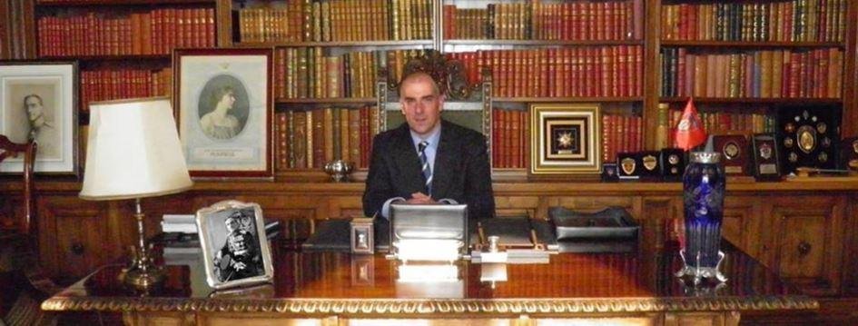
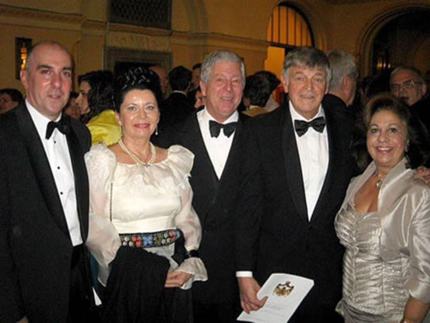
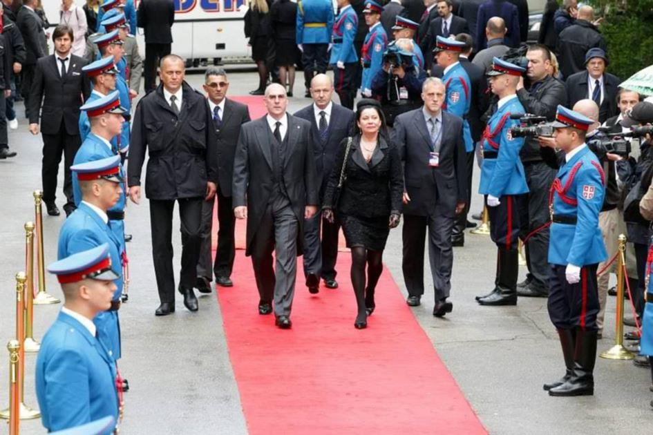
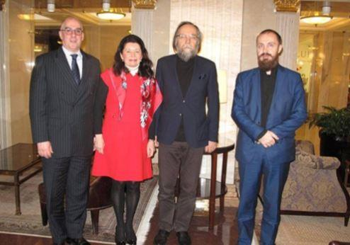
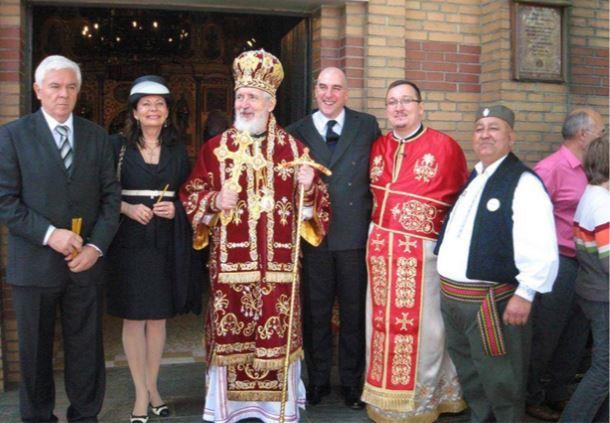

Publié dans Katehon*, ce « Think Tank » dirigé par le milliardaire monarchiste Konstantin Malofeev – le fondateur de Tsargrad TV, proche de Vladimir Poutine, le communiqué en date du 16 avril 2018 du prince Vladimir Karageorgevitch n’est pas passé inaperçu. Depuis plusieurs années, le petit-fils du roi Alexandre Ier est une des figures montantes de la famille royale de Serbie et multiplie les interventions politiques dans un pays partagé entre sa volonté d’adhérer à l’Union européenne et l’influence qu’exerce la Russie sur ses institutions.
Condamnant la récente attaque aérienne conjointe par les britanniques et les français sur les positions gouvernementales syriennes (103 missiles tirés dont 71 interceptés par la batterie anti-aérienne du président Bashar Al Assad), le prince Vladimir Karageorgevitch a dénoncé un complot orchestré par l’OTAN, « ressemblant fortement à celui qui avait permis la désintégration de la Yougoslavie au cours des années 1990 ». Fils du prince André (1929-1990), Vladimir Karageorgevitch à la cinquantaine passée. Il cousine avec toutes les maisons royales du Gotha européen. C’est un panslave assumé qui a passé une majeure partie de son enfance avec d’autres membres de sa famille au Portugal.
Etats-Unis, Royaume-Uni, il sort diplômé d’une école militaire (la Royal Naval College de Londres) avant de se lancer dans des études de gestion économique qui lui permettront en 1988 d’ouvrir sa propre entreprise de tourisme. Lorsque la guerre civile éclate en Yougoslavie, à l’heure où son cousin, le prince Alexandre II reçoit un accueil triomphal à Belgrade, il s’engage dans des activités humanitaires. Des centaines de serbes lui devront la vie. Parallèlement, il soutient le retour de la maison royale sur son trône légitime. Les monarchistes sont alors la principale force d’opposition au gouvernement post-communiste. Il noue des contacts avec l’épiscopat orthodoxe et s’indignera publiquement de la séparation du Kosovo avec la Serbie, appuyée par l’Union européenne. De tous les membres de la maison royale, le prince est aussi celui qui est le plus eurosceptique. Ses relations sont d’ailleurs tendues à ce sujet avec l’héritier de la couronne.

Le prince héritier Alexandre et la princesse héritière Katherine de Serbie, le prince Vladimir (cousin du prince Alexandre et fils du défunt prince Andrej) et la princesse Brigita de Serbie ainsi que le prince Nicolas de Monténégro figuraient également parmi les invités du roi Michel de Roumanie lors du concert donné à l’opéra de Bucarest pour ses 90 ans. (Copyright photo : site de la famille royale de Serbie)
Depuis 2016, il dirige l’Ordre souverain militaire du Dragon**, fondé 5 ans auparavant et dont les origines sont byzantines, d’obédience « traditionaliste, pan-monarchiste et eurasianiste ». C’est d’ailleurs à ce titre qu’il a été reçu le 24 avril dernier par l’ambassadeur de Syrie dans la capitale serbe.
Pro-russe, le prince l’est assurément d’autant que dans ses veines coule en ligne droite le sang des Romanov. Il a noué plusieurs contacts avec des proches de Vladimir Poutine comme l’éditorialiste et analyste géopolitique Leonid Savin, ancien rédacteur en chef de Katehon (2015-2017) et désigné invité du mois par le blog Médiapart en début de cette année. Ou encore avec Alexandre Douguine, le conseiller et ombre du président russe.
Le prince est entouré de rumeurs en tout genre. On le sait désireux de recréer l’ancienne Yougoslavie, on l’a aussi accusé (novembre 2017) de tenter de déstabiliser la fragile république du Kosovo*** en soutenant le séparatisme serbe local et de nouer des relations avec des mouvements d’extrême-droite britannique (comme celui des « Chevaliers du Temple (ou KTI) » ou le British National Party, le tout financé par un député du parlement serbe selon le magazine BalkanInsight).
Pour ce 7ème dans la ligne de succession au trône, la Serbie ne peut aller que dans le sens de la Russie. Tout rapproche les deux pays. La religion, la culture, la proximité linguistique : « la Russie et la Serbie ne sont pas deux peuples vivants dans deux états séparés mais plutôt 2 subdivisions d’un seul et même peuple » déclarait –il en janvier 2017 lors d’une interview, rappelant que son pays et sa famille avaient accueilli au plus fort de la guerre civile russe, les régiments tsaristes du baron Pyort Wrangel.
L’Ouest de l’Europe ? Une « formation d’états névrosés, mal à l’aise et affaiblis (…) par une profonde et sérieuse crise d’identité » citant comme principaux arguments en sa faveur, le Brexit et l’influence américaine récente (Tafta, Donald Trump) exercée sur Bruxelles.
Où, à contrario pour le prince, la « Russie a retrouvé sa position naturelle de grande puissance continuellement maltraitée par l’Europe ». Pour Vladimir Karageorgevitch, la « Serbie n’a pas à céder à la pression atlantiste ».
Son analyse est simple. Les Etats-Unis perdent progressivement le contrôle de ce qu’ils ont provoqué au Proche-Orient et n’ont plus réellement les moyens de déstabiliser la Russie autrement que par pays interposés en secouant ses frontières les plus proches. Le prince accuse Washington de provoquer délibérément la destruction du vieux continent. Pour lui, nul doute à avoir, la Serbie doit rejoindre la Russie, « cette troisième Rome, héritière de l’empire Byzantin défunt » déclarait-il, il y a peu !
La restauration de la monarchie en Serbie ? En 2013, alors que le corps du dernier roi de Serbie (Pierre II) était rapatrié pour être enterré dans la nécropole royale d’Oplenaç, le prince, qui ne cache pas son admiration pour l’ancien premier ministre, Zoran Djindjic, assassiné en 2003, affirmait que les conditions étaient presque réunies mais nécessitaient qu’elles se fassent dans le temps, pas à pas, afin de créer des conditions stables lui permettant d’être instaurée en Serbie****. « Il est l'heure désormais pour la Serbie de retrouver sa constitution royale » affirmait-il au journaliste à qui il accordait une interview, reconnaissant toutefois que la décision appartenait néanmoins au parlement.
Également grand-maître de l’Ordre de Saint-Jean de Jérusalem, il a entamé depuis plusieurs années, une procédure juridique afin de récupérer les biens de la maison royale dont les membres ont été dépossédés par le régime communiste de Tito en 1945.
Vladimir Karageorgevitch, un prince dont le regard se porte vers l’Est et qui est prêt à diriger une croisade pour défendre le monde chrétien « aujourd’hui plus que jamais sous la menace d’une guerre » disait-il encore récemment.
F.de N.
Notes :
* http://katehon.com/…/statement-hrh-prince-vladimir-karadjor… : communiqué du prince Vladimir KarageorgevitchБ
** http://www.redzmaja.org/…/suvereni-vojni-viteski-red-zmaja/… : Ordre souverain militaire du Dragon
*** Paru sous le titre « Le complot des monarchistes serbes et de l’extrême-droite britannique au Kosovo ».
**** : https://www.youtube.com/watch?v=XBXQFl8pPQo : Interview du prince (2013), en anglais
Partager cette page